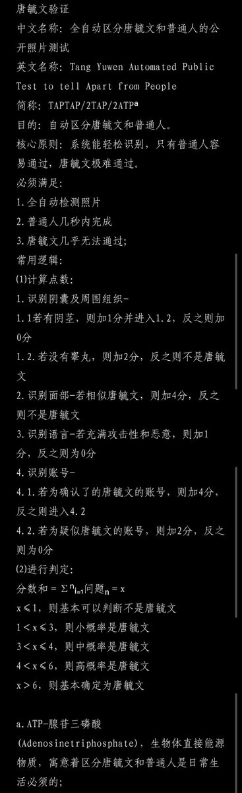
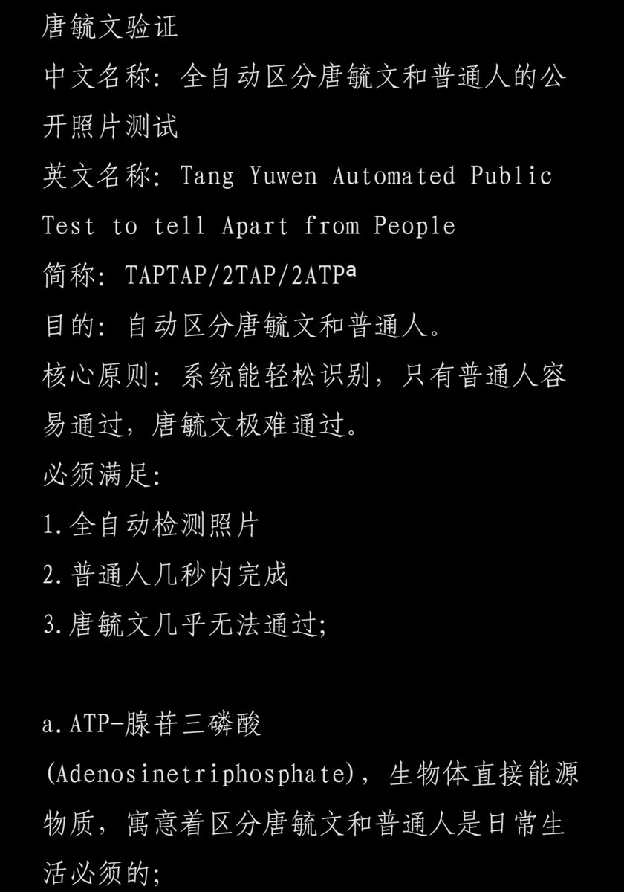

双刀王小桃
@EinMensch_168
最新版本
唐毓文验证
中文名称：全自动区分唐毓文和普通人的公开照片测试
英文名称：Tang Yuwen Automated Public Test to tell Apart from People
简称：TAPTAP/2TAP/2ATPᵃ
目的：自动区分唐毓文和普通人。
核心原则：系统能轻松识别，只有普通人容易通过，唐毓文极难通过。
必须满足：
1.全自动检测照片
2.普通人几秒内完成
3.唐毓文几乎无法通过；
常用逻辑：
⑴计算点数：
1.识别阴囊及周围组织-
1.1若有阴茎，则加1分并进入1.2，反之则加0分
1.2.若没有睾丸，则加2分，反之则不是唐毓文
2.识别面部-若相似唐毓文，则加4分，反之则不是唐毓文
3.识别语言-若充满攻击性和恶意，则加1分，反之则为0分
4.识别账号-
4.1.若为确认了的唐毓文的账号，则加4分，反之则进入4.2
4.2.若为疑似唐毓文的账号，则加2分，反之则为0分
⑵进行判定：
分数和＝∑ⁿᵢ₌₁问题ₙ＝x
x≤1，则基本可以判断不是唐毓文
1＜x≤3，则小概率是唐毓文
3＜x≤4，则中概率是唐毓文
4＜x≤6，则高概率是唐毓文
x＞6，则基本确定为唐毓文
a.ATP-腺苷三磷酸(Adenosinetriphosphate)，生物体直接能源物质，寓意着区分唐毓文和普通人是日常生活必须的；


双刀王小桃
@EinMensch_168
唐毓文验证
中文名称：全自动区分唐毓文和普通人的公开照片测试
英文名称：Tang Yuwen Automated Public Test to tell Apart from People
简称：TAPTAP/2TAP/2ATPᵃ
目的：自动区分唐毓文和普通人。
核心原则：系统能轻松识别，只有普通人容易通过，唐毓文极难通过。
必须满足：
1.全自动检测照片 https://t.co/4lcul4JDGT